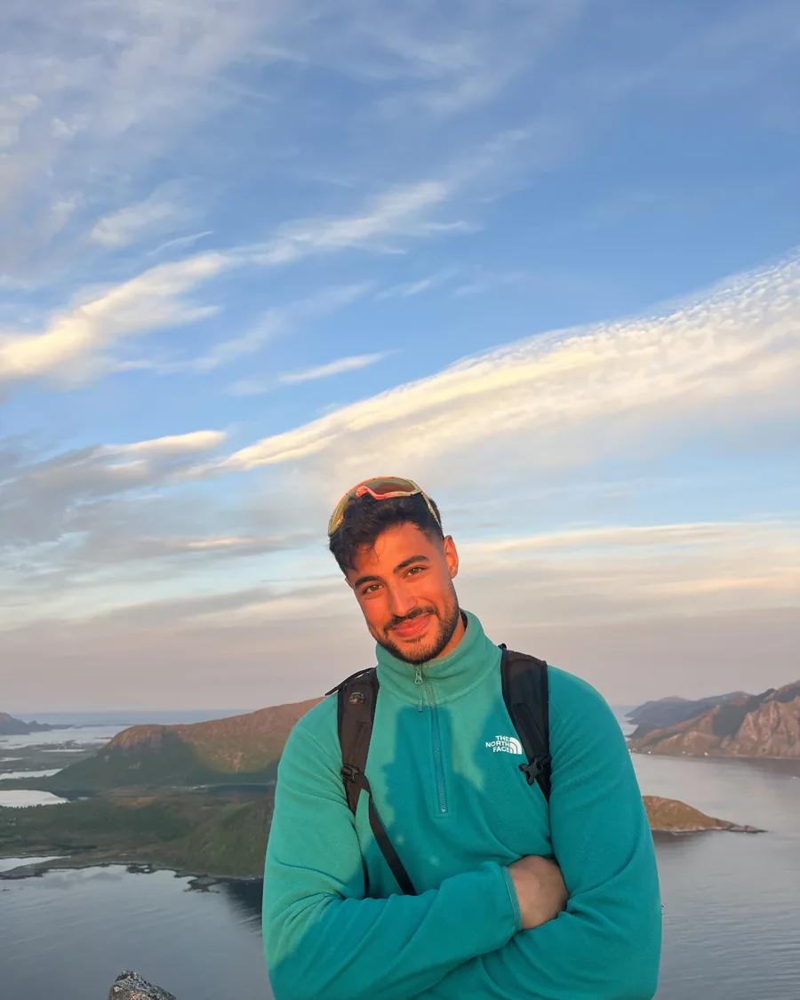

group project of three · 2026
Object detection for the blind and visually impaired
A wearable aid that finds fruit with a camera and shows the direction with a vibration belt and Norwegian speech. I was responsible for the software.
electronic systems design · NTNU Trondheim
Electronics student who likes explaining what is hard, building what is useful and playing the trumpet when it matters.
Right now I am thinking about electronics
group project of three · 2026
A wearable aid that finds fruit with a camera and shows the direction with a vibration belt and Norwegian speech. I was responsible for the software.
group project of two · 2025
Analog interface circuit, an ESP32 that computes heart rate and a live view in the browser, from breadboard to a four-layer PCB.
group project of two · 2026
Synchronous buck converter with the LTC3807 holding the output within ±30 mV. Two PCB revisions, where the first failed because of a wiring error.
own project · 2025
Drivers for GPIO, I2C, SPI and USART written from scratch in C, without HAL, with example programs.
ongoing · 2026 to present
Guides fellow students in electronics courses at NTNU, in IELS2021 and IELS2022. Has also held own crash courses in C programming and analog electronics with filter design.
ongoing · vice president since Jan 2026
Vice president of a group with over 200 athletes. Coordinates a team of 14 coaches and keeps the community running, from planning to the practical side of the training sessions.
own business · since 2018
Trumpeter for funerals, weddings and church services. Small ceremonies where timing, calm and listening are what count.
Adjust the resistor and the capacitor and see how the cutoff frequency moves. This is the kind of intuition I try to pass on as a learning assistant.
fc =
Each row is something I have worked on. Size and weight show how much it meant. Hover for details.
Could not load the timeline right now. Try reloading the page.
I grew up in Lofoten and took a slightly winding road to electronics: sports studies in upper secondary school, military service in the King's Guard, six months as a substitute teacher, then a preparatory science course, then a bachelor in electronic systems design at NTNU. I think that road is why I am good at explaining. I remember well what it is like not to understand it yet. My time in the military, in the King's Guard 3rd Company, taught me discipline, order and precision, which I bring into my engineering work.
Alongside my studies I have been a class representative, sat on reference groups and taken on leadership roles. I like making things run smoothly for others, whether it is a course or a training group.
I speak Norwegian, English and Arabic, and have a connection to the Arabic language and Iraqi culture.

Oscilloscope, signal generator and multimeter
Analog electronics, filter design, radio communication
C and embedded systems
LaTeX and Overleaf
I am looking for a summer job in 2027 within electronics and embedded systems. Feel free to reach out if you have something on your mind.